| Rank | Move | Club | Form | Last Result | Elo | Change |
|---|---|---|---|---|---|---|
| 1▲1 | ▲1 | WWDWD | W 1. FC Magdeburg 6-1 | 1830.3+0.9 | +0.9 | |
| 13▲2 | ▲2 | Bundesliga | WWWDL | W Werder Bremen 3-2 | 1608.1+3.8 | +3.8 |
| 21▼4 | ▼4 | Bundesliga | WLWWW | W 1. FC Nürnberg 5-2 | 1567.0+4.0 | +4.0 |
| 34▼4 | ▼4 | Bundesliga | WLDLW | W SC Paderborn 07 1-0 | 1501.7+7.8 | +7.8 |
| 35▲5 | ▲5 | Bundesliga | WWLLW | W Rot-Weiß Essen 2-1 | 1500.7+2.9 | +2.9 |
| 43▲1 | ▲1 |  Bundesliga | WLLLW | W VfL Wolfsburg 3-2 | 1475.7+5.3 | +5.3 |
| 58▲9 | ▲9 | Bundesliga | DWWWL | D Holstein Kiel 1-1 | 1420.5-6.8 | -6.8 |
| 69— | — | Bundesliga | WDLDL | W SG Sonnenhof Grossaspach 4-2 | 1389.5+2.2 | +2.2 |
| 70▲12 | ▲12 | Bundesliga | WLWLD | W Hamburger SV 3-1 | 1389.3+19.9 | +19.9 |
| 83▼24 | ▼24 | Bundesliga | LLWLW | L VfL Bochum 0-2 | 1369.9-27.8 | -27.8 |
| 89▲12 | ▲12 | Bundesliga | LWDDW | L Borussia Dortmund 2-3 | 1357.9-3.8 | -3.8 |
| 118▲27 | ▲27 | 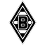 Bundesliga | WWLLL | W Karlsruher SC 2-0 | 1316.4+6.8 | +6.8 |
| 123▼23 | ▼23 |  Bundesliga | LLWWW | L Eintracht Frankfurt 1-3 | 1312.6-19.9 | -19.9 |
| 128▲18 | ▲18 | Bundesliga | WDLWL | W Union Berlin 5-0 | 1309.4+23.9 | +23.9 |
| 134▼16 | ▼16 | Bundesliga | LDDWL | L 1. FC Köln 0-5 | 1305.1-23.9 | -23.9 |
| 142▼7 | ▼7 | 2. Bundesliga | LDWDW | L SC Freiburg 2-3 | 1294.5-5.3 | -5.3 |
| 148▲2 | ▲2 | Bundesliga | LWDLW | L VfB Stuttgart 0-1 | 1289.4-7.8 | -7.8 |
| 153▲3 | ▲3 | 2. Bundesliga | WWDWW | W SSV Jeddeloh 2-0 | 1282.1+2.2 | +2.2 |
| 164▼27 | ▼27 | Bundesliga | LLWLD | L SV Darmstadt 98 0-2 | 1262.7-29.4 | -29.4 |
| 185▼21 | ▼21 | Bundesliga | LDLLD | L Dynamo Dresden 0-2 | 1245.8-23.5 | -23.5 |
| 189▲42 | ▲42 | 2. Bundesliga | WWWDW | W Hannover 96 2-0 | 1244.0+19.7 | +19.7 |
| 218▼27 | ▼27 | 2. Bundesliga | LLDDW | L Bayer Leverkusen 2-5 | 1219.8-4.0 | -4.0 |
| 222▼7 | ▼7 | 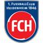 2. Bundesliga | DLDDW | D Energie Cottbus 1-1 | 1215.2-3.9 | -3.9 |
| 236▼1 | ▼1 | 2. Bundesliga | DDWDW | D SV Darmstadt 98 0-0 | 1205.1-0.8 | -0.8 |
| 245▲19 | ▲19 |  2. Bundesliga | LWLWD | L Bayern München 1-6 | 1202.1-0.9 | -0.9 |
| 274▲46 | ▲46 | 2. Bundesliga | WDLLL | W FSV Mainz 05 2-0 | 1184.3+27.8 | +27.8 |
| 305▲49 | ▲49 | 2. Bundesliga | DWDLD | D 1899 Hoffenheim 1-1 | 1164.5+6.8 | +6.8 |
| 308▼74 | ▼74 | 2. Bundesliga | LLDLW | L 1. FC Kaiserslautern 0-2 | 1163.2-19.7 | -19.7 |
| 318▲74 | ▲74 | 2. Bundesliga | WDLWL | W SV Elversberg 2-0 | 1154.9+29.4 | +29.4 |
| 340▼19 | ▼19 | 2. Bundesliga | LWWDL | L Hertha BSC 0-1 | 1146.4-6.6 | -6.6 |
| 343▲12 | ▲12 | 2. Bundesliga | WLWDL | W FC Schalke 04 2-0 | 1144.8+23.5 | +23.5 |
| 371▲40 | ▲40 | 2. Bundesliga | WLDDL | W SpVgg Greuther Fürth 3-0 | 1135.4+17.0 | +17.0 |
| 403▼39 | ▼39 | 3. Liga | LDWWW | L FC Ingolstadt 04 1-2 | 1120.0-15.6 | -15.6 |
| 432▲12 | ▲12 | 2. Bundesliga | DDLDW | D 1. FC Heidenheim 1-1 | 1110.8+3.9 | +3.9 |
| 470▼66 | ▼66 | 2. Bundesliga | LLWLL | L Borussia Mönchengladbach 0-2 | 1098.0-6.8 | -6.8 |
| 498▲87 | ▲87 | 2. Bundesliga | WLWLD | W Hannover 96 2-0 | 1088.0+23.1 | +23.1 |
| 513▲19 | ▲19 | 3. Liga | LWLWD | L RB Leipzig 1-2 | 1084.3-2.9 | -2.9 |
| 528▲40 | ▲40 | 3. Liga | WDDWW | W Verl 3-1 | 1081.6+13.0 | +13.0 |
| 530▼59 | ▼59 | 2. Bundesliga | LWLDD | L VfL Osnabrück 0-3 | 1081.4-17.0 | -17.0 |
| 576▲27 | ▲27 | 3. Liga | WWLLW | W Stuttgart II 2-1 | 1070.2+10.0 | +10.0 |
| 650▲5 | ▲5 | 3. Liga | DLWDL | D Hansa Rostock 1-1 | 1049.5+2.0 | +2.0 |
| 665▼5 | ▼5 | 3. Liga | DLLWD | D Fortuna Düsseldorf 1-1 | 1044.2-2.0 | -2.0 |
| 771▲69 | ▲69 | 3. Liga | WDWDL | W Würzburger Kickers 4-0 | 1018.3+17.5 | +17.5 |
| 830▼73 | ▼73 | 3. Liga | LLDDW | L FC Viktoria Köln 1-3 | 1004.6-13.0 | -13.0 |
| 833▲70 | ▲70 | 3. Liga | WWWLL | W MSV Duisburg 2-1 | 1003.6+15.6 | +15.6 |
| 865▼81 | ▼81 | 3. Liga | LWLDW | L Havelse 2-3 | 995.9-16.2 | -16.2 |
| 891▲38 | ▲38 | 3. Liga | WLLDL | W Fortuna Köln 1-0 | 989.7+7.5 | +7.5 |
| 893▲70 | ▲70 | 3. Liga | WDWWL | W SG Sonnenhof Grossaspach 7-1 | 989.7+14.1 | +14.1 |
| 1000▼20 | ▼20 | Regionalliga | DWWWW | D Lokomotive Leipzig 2-2 | 965.0-5.4 | -5.4 |
| 1013▲51 | ▲51 | Regionalliga | WDLWD | W Greifswalder FC 3-2 | 962.0+10.2 | +10.2 |
| 1063▼78 | ▼78 | 3. Liga | LWDLL | L SV Meppen 0-4 | 952.1-17.5 | -17.5 |
| 1064▼33 | ▼33 | 3. Liga | LDDWD | L Rot-Weiß Essen 0-1 | 951.8-6.5 | -6.5 |
| 1073▼90 | ▼90 | Regionalliga | LDWWW | L Magdeburg II 1-2 | 949.7-20.5 | -20.5 |
| 1090▲31 | ▲31 | 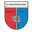 Regionalliga | WLWWD | W Todesfelde 5-1 | 946.0+4.5 | +4.5 |
| 1103▲116 | ▲116 | 3. Liga | WLLWW | W Hoffenheim II 4-1 | 942.8+19.6 | +19.6 |
| 1111▼13 | ▼13 | Regionalliga | DWWWL | D BFC Dynamo 0-0 | 941.3-4.8 | -4.8 |
| 1120▲27 | ▲27 | Regionalliga | WWWLL | W HSC Hannover 2-1 | 939.7+3.5 | +3.5 |
| 1197▲73 | ▲73 | 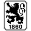 Regionalliga | WLWDW | W Eichstätt 2-0 | 927.3+11.9 | +11.9 |
| 1204▼105 | ▼105 | 3. Liga | LWLLW | L Waldhof Mannheim 1-4 | 926.4-19.6 | -19.6 |
| 1215▲35 | ▲35 | Regionalliga | WLWWW | W SG Wattenscheid 09 3-0 | 924.4+4.9 | +4.9 |
| 1225▲26 | ▲26 | Regionalliga | WWWWW | W Eintracht Norderstedt 4-3 | 922.9+3.6 | +3.6 |
| 1231▼66 | ▼66 |  3. Liga | LWWDD | L Alemannia Aachen 1-2 | 921.5-10.0 | -10.0 |
| 1235▲46 | ▲46 |  Regionalliga | WWWWW | W Bonner SC 2-0 | 921.2+7.5 | +7.5 |
| 1311▼51 | ▼51 | Regionalliga | DDWLW | D Atlas Delmenhorst 2-2 | 909.4-8.4 | -8.4 |
| 1400▲31 | ▲31 | Regionalliga | WDWDD | W Ansbach 2-1 | 895.3+3.8 | +3.8 |
| 1401▼17 | ▼17 | Regionalliga | DWWDD | D Kickers Offenbach 1-1 | 895.3-2.5 | -2.5 |
| 1416▲31 | ▲31 | Regionalliga | WWLWW | W Luckenwalde 3-1 | 893.2+5.7 | +5.7 |
| 1459▼45 | ▼45 | 3. Liga | LLLDW | L Preußen Münster 0-1 | 886.1-7.5 | -7.5 |
| 1466▼213 | ▼213 | Regionalliga | LWWWW | L St. Pauli II 0-3 | 884.7-34.3 | -34.3 |
| 1479▲203 | ▲203 | Regionalliga | WLLLD | W FSV Zwickau 3-0 | 883.6+25.3 | +25.3 |
| 1577▲47 | ▲47 | Regionalliga | DDDLW | D Hallescher FC 2-2 | 872.6+5.4 | +5.4 |
| 1602▲40 | ▲40 | Regionalliga | DDWWW | D FC Carl Zeiss Jena 0-0 | 869.3+4.8 | +4.8 |
| 1659▲139 | ▲139 | 3. Liga | WDDLL | W FC Saarbrücken 3-2 | 862.6+16.2 | +16.2 |
| 1768▼92 | ▼92 | Regionalliga | DDWWW | D Bayern München II 1-1 | 847.8-4.0 | -4.0 |
| 1818▼131 | ▼131 | 3. Liga | LLWDL | L FC Augsburg 2-4 | 841.4-2.2 | -2.2 |
| 1819▲117 | ▲117 | WWWLW | W Sportfreunde Lotte 4-1 | 841.3+13.5 | +13.5 | |
| 1829▲44 | ▲44 | Regionalliga | WWLWL | W Wiedenbrück 3-1 | 840.0+5.0 | +5.0 |
| 1857▼144 | ▼144 | 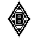 Regionalliga | LWWLW | L Westfalia Rhynern 2-3 | 837.4-17.6 | -17.6 |
| 1913▼106 | ▼106 | Regionalliga | LWDDD | L Augsburg II 1-2 | 830.1-14.6 | -14.6 |
| 1915▲3 | ▲3 | Regionalliga | DWDDL | D SSV Ulm 1846 1-1 | 829.9-0.1 | -0.1 |
| 1916▼205 | ▼205 | Regionalliga | LDWDL | L Erzgebirge Aue 0-3 | 829.8-25.3 | -25.3 |
| 2009▼75 | ▼75 | Regionalliga | LLWLW | L FC Rot-Weiß Erfurt 2-3 | 817.9-10.2 | -10.2 |
| 2141▼107 | ▼107 | Regionalliga | LDLLW | L Werder Bremen II 2-3 | 801.5-14.0 | -14.0 |
| 2148▼179 | ▼179 | Regionalliga | LWLWD | L Eintracht Trier 0-2 | 800.8-22.2 | -22.2 |
| 2157▲34 | ▲34 |  Regionalliga | DWDDW | D Nürnberg II 1-1 | 799.9+4.0 | +4.0 |
| 2158▲141 | ▲141 | Regionalliga | WLWWW | W Eltersdorf 2-0 | 799.6+15.9 | +15.9 |
| 2226▲21 | ▲21 | 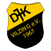 Regionalliga | DWDLD | — — | 789.7N/R | N/R |
| 2247▲4 | ▲4 |  Regionalliga | DLDWW | D Hilden 1-1 | 787.3-2.2 | -2.2 |
| 2262▲164 | ▲164 | Regionalliga | WWLLL | W Chemnitzer FC 2-1 | 785.9+20.5 | +20.5 |
| 2315▲38 | ▲38 | Regionalliga | WDLLW | W Eintracht Frankfurt II 2-1 | 778.8+6.9 | +6.9 |
| 2324▲182 | ▲182 | WWWWW | W TSV Steinbach 2-0 | 777.9+24.1 | +24.1 | |
| 2338▼112 | ▼112 | Regionalliga | LWWDW | L VfR Aalen 0-1 | 776.4-15.8 | -15.8 |
| 2353▼184 | ▼184 | Regionalliga | LLWDW | L VfR Mannheim 0-2 | 774.0-24.1 | -24.1 |
| 2355▲124 | ▲124 | Regionalliga | WWWWW | W SV Sandhausen 1-0 | 773.9+15.8 | +15.8 |
| 2364▲26 | ▲26 | 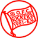 Regionalliga | DLDLL | D SGV Freiberg 1-1 | 772.5+2.5 | +2.5 |
| 2394▲5 | ▲5 | Regionalliga | DDWDL | D FC 08 Homburg 1-1 | 769.1+0.1 | +0.1 |
| 2403▲3 | ▲3 | Regionalliga | WWDWW | — — | 768.4N/R | N/R |
| 2473▼13 | ▼13 | Regionalliga | DLLDL | D Wacker Burghausen 3-3 | 758.4-2.4 | -2.4 |
| 2500▲27 | ▲27 | Regionalliga | DDDLW | D Buchbach 3-3 | 754.3+2.4 | +2.4 |
| 2537▲2 | ▲2 | Regionalliga | DWWLW | D Paderborn II 2-2 | 748.3-2.3 | -2.3 |
| 2540▲23 | ▲23 | Regionalliga | DLLWD | D Köln II 2-2 | 748.0+2.3 | +2.3 |
| 2567▲80 | ▲80 | Regionalliga | WLDWL | W BFC Preussen 1-0 | 743.3+10.3 | +10.3 |
| 2571▲112 | ▲112 | Regionalliga | WDLWL | W Hertha BSC II 2-0 | 743.0+14.2 | +14.2 |
| 2584▲117 | ▲117 | Regionalliga | WWWLW | W Illertissen 2-1 | 741.0+14.6 | +14.6 |
| 2585▼17 | ▼17 | Regionalliga | LDWLL | L Hertha BSC 0-2 | 740.8-2.2 | -2.2 |
| 2632▼147 | ▼147 | Regionalliga | LLWDL | L FC Astoria Walldorf 1-4 | 733.2-23.8 | -23.8 |
| 2650▲20 | ▲20 | Regionalliga | WLWWW | — — | 730.7N/R | N/R |
| 2658▼102 | ▼102 | Regionalliga | LLDLL | L Eintracht Frankfurt II 1-2 | 729.7-17.9 | -17.9 |
| 2683▲60 | ▲60 | Regionalliga | WLLWL | W Werder Bremen II 4-1 | 727.7+27.2 | +27.2 |
| 2710▼46 | ▼46 | Regionalliga | LLWWD | L Borussia Dortmund II 0-2 | 723.7-7.5 | -7.5 |
| 2724▲137 | ▲137 | Regionalliga | WWLLW | W Stuttgarter Kickers 2-0 | 721.4+22.2 | +22.2 |
| 2736▼58 | ▼58 | Regionalliga | LLDLD | L SV Babelsberg 03 0-1 | 719.7-10.3 | -10.3 |
| 2749▲124 | ▲124 | Regionalliga | WLLLL | W Hamburger SV II 4-1 | 717.7+19.6 | +19.6 |
| 2771▲43 | ▲43 | 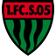 Regionalliga | WLDDD | W Landsberg 2-1 | 714.4+6.5 | +6.5 |
| 2781▼68 | ▼68 | Regionalliga | LLLLW | L TSV 1860 München 0-2 | 712.5-11.9 | -11.9 |
| 2837▲58 | ▲58 | Regionalliga | DWDWD | D Phönix Lübeck 2-2 | 702.9+8.4 | +8.4 |
| 2853▼72 | ▼72 | Regionalliga | LWLDL | L Hamburger SV II 1-4 | 701.0-27.2 | -27.2 |
| 2866▲11 | ▲11 | 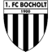 Regionalliga | DWLLL | D Bochum II 3-3 | 699.3+1.8 | +1.8 |
| 2899▲136 | ▲136 | Regionalliga | WLDWL | W Hessen Kassel 4-1 | 691.9+23.8 | +23.8 |
| 2930▲94 | ▲94 | Regionalliga | WLLDL | W FSV Mainz 05 II 3-1 | 687.3+16.5 | +16.5 |
| 2934▼3 | ▼3 | Regionalliga | DWWLW | D FC Bocholt 3-3 | 686.8-1.8 | -1.8 |
| 2942▼88 | ▼88 | Regionalliga | LLDDW | L BSG Chemie Leipzig 0-2 | 686.2-14.2 | -14.2 |
| 2951▲122 | ▲122 | Regionalliga | WWLWL | W Greuther Fürth II 2-0 | 684.1+23.6 | +23.6 |
| 2970▲10 | ▲10 | 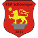 Regionalliga | LLLDL | — — | 679.2N/R | N/R |
| 3000▼13 | ▼13 | Regionalliga | LDWWL | L VfB Oldenburg 1-2 | 673.3-3.5 | -3.5 |
| 3010▲143 | ▲143 | Regionalliga | WLLLL | W Weiche Flensburg 3-0 | 671.2+34.3 | +34.3 |
| 3013▼74 | ▼74 | Regionalliga | LDDLW | L Barockstadt Fulda-Lehn. 1-3 | 670.9-16.5 | -16.5 |
| 3017▼121 | ▼121 | Regionalliga | LDLDD | L Schwaben Augsburg 0-2 | 670.2-23.6 | -23.6 |
| 3019▲21 | ▲21 | DWWWL | D Schalke 04 II 1-1 | 669.9+2.2 | +2.2 | |
| 3052▼14 | ▼14 | Regionalliga | LLWLD | L Hannover 96 II 3-4 | 664.4-3.6 | -3.6 |
| 3056▲26 | ▲26 | Regionalliga | DLDDL | D Nürnberg II 1-1 | 663.8+8.0 | +8.0 |
| 3057▲64 | ▲64 | 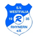 Regionalliga | WDLLL | W Borussia M'gladbach II 3-2 | 663.7+17.6 | +17.6 |
| 3087▲40 | ▲40 | Regionalliga | LWWLL | L Freiburg II 1-2 | 656.1-6.9 | -6.9 |
| 3091▼70 | ▼70 |  Regionalliga | LDDDW | L Memmingen 0-2 | 655.9-15.9 | -15.9 |
| 3120▼8 | ▼8 | Regionalliga | LDDLL | L SpVgg Unterhaching 1-2 | 645.5-3.8 | -3.8 |
| 3129▲14 | ▲14 | Regionalliga | DLDWD | D SSV Jeddeloh 1-1 | 641.0+1.7 | +1.7 |
| 3135▼13 | ▼13 | Regionalliga | LLWLL | L Altglienicke 1-3 | 640.3-5.7 | -5.7 |
| 3155▲1 | ▲1 | 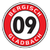 Regionalliga | DLLLW | D SV Rodinghausen 1-1 | 633.8-2.9 | -2.9 |
| 3170▲42 | ▲42 | Regionalliga | WWLLD | W RSV Eintracht 2-1 | 631.1+14.8 | +14.8 |
| 3206▲14 | ▲14 | Regionalliga | DLLWL | D Bergisch Gladbach 1-1 | 616.2+2.9 | +2.9 |
| 3209▼30 | ▼30 | Regionalliga | LLWLL | L Sportfreunde Siegen 1-4 | 615.9-13.5 | -13.5 |
| 3211▼4 | ▼4 | Regionalliga | LLLWD | L Rot-weiss Oberhausen 0-3 | 615.1-4.9 | -4.9 |
| 3226▲15 | ▲15 | Regionalliga | DLDLD | D Freiburg II 2-2 | 611.6+3.8 | +3.8 |
| 3235▼36 | ▼36 | Regionalliga | LWLLL | L Tasmania Berlin 1-2 | 607.7-14.8 | -14.8 |
| 3236▼8 | ▼8 | Regionalliga | LDLWL | L SV Drochtersen/Assel 1-5 | 607.5-4.5 | -4.5 |
| 3311▼4 | ▼4 | Regionalliga | LDLDL | L FC Schweinfurt 05 1-2 | 577.6-6.5 | -6.5 |
| 3336▼2 | ▼2 |  Regionalliga | LLLLL | L FC Gutersloh 1-3 | 563.1-5.0 | -5.0 |